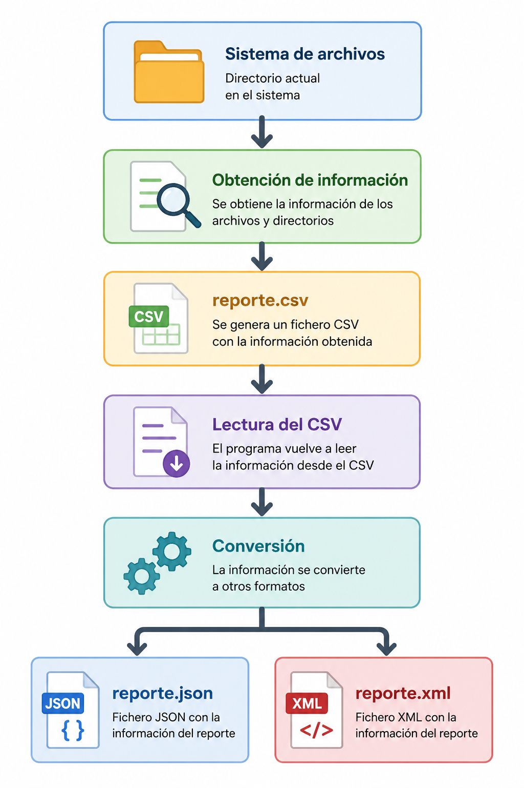

📝 Ejercicio 3: Proyecto Integrador (Parte 3) - Formatos de intercambio¶
Estructura del proyecto
SETUP_PAQUETES
Antes de empezar, crea un paquete llamado Ejercicio3 en tu proyecto Kotlin. Dentro de ese paquete se deberá construir el archivo .kt con la solución del ejercicio.
Referencia central de preparación: - Entorno y proyecto base
📋 Enunciado¶
En este ejercicio vamos a completar el Explorador Interactivo que has desarrollado en los temas anteriores. Ahora añadiremos dos capacidades habituales en aplicaciones reales: cargar configuración externa y exportar información del sistema de ficheros en varios formatos.
Código Base
Utiliza como punto de partida el código desarrollado en el Ejercicio 2. Si lo prefieres, puedes comenzar directamente desde la plantilla oficial del proyecto, que incluye la estructura del programa y los retos a completar.
📥 Descargar Código Base Oficial (Solucion_T2_Plantilla_T3.kt)
La aplicación debe incorporar las siguientes novedades:
📋 Menú final:
- 1- Crear un directorio
- 2- Eliminar un directorio o fichero
- 3- Ver contenido recursivo de un directorio
- 4- Crear un archivo de texto
- 5- Leer un archivo de texto
- 6- Encriptar/Ocultar archivo (Texto a Binario)
- 7- Copiar un archivo a otra ruta
- 8- Exportar CSV y convertir a JSON y XML
- 0- Salir
Objetivo¶
En esta tercera y última parte del proyecto ampliarás el explorador de archivos desarrollado anteriormente incorporando dos nuevas funcionalidades:
- Cargar la configuración inicial desde un fichero externo en formato JSON.
- Exportar la información del directorio actual a un fichero CSV y, posteriormente, convertir dicho fichero a los formatos JSON y XML.
De esta forma practicarás un flujo habitual en muchas aplicaciones reales:

Material proporcionado¶
Junto con este enunciado se proporcionan los siguientes archivos:
Antes de comenzar la práctica debes incorporar los archivos proporcionados a tu proyecto de la Parte 2.
SETUP_RECURSOS_T3
La preparación operativa de config.json y carpeta_prueba se ha movido a:
🛠️ Requisitos técnicos de las nuevas opciones¶
- Configuración inicial: Al arrancar, el programa debe buscar un fichero config.json en la raíz del proyecto. Si existe, utilizará los valores de
directorio_inicialymostrar_archivos_ocultos. Si no existe, deberá usarSystem.getProperty("user.home")como directorio inicial y no mostrar archivos ocultos. - Opción 8 (Generar CSV): Debe analizar solo el contenido del directorio actual, sin recorrer subdirectorios, y generar un fichero
reporte.csvcon esta información: nombre, tipo y tamaño en bytes, y guardarlo en la carpetaexportar.- Convertir a JSON y XML: Después de generar
reporte.csv, el programa deberá leer ese CSV y, a partir de sus datos, crearreporte.jsonyreporte.xmly guardarlos en la carpetaexportar.
- Convertir a JSON y XML: Después de generar
- Restricción importante: Una vez creado
reporte.csv, no está permitido volver a recorrer el directorio para generarreporte.jsonyreporte.xml. Ambos archivos deben obtenerse exclusivamente desde la información almacenada en el CSV. - Modularidad: El código debe estar organizado en funciones o clases separadas para cargar la configuración, obtener la información del directorio, generar el CSV, leer el CSV, generar el JSON y generar el XML. Es recomendable utilizar una clase para representar la información de cada archivo.
- Dependencias: Puedes utilizar librerías externas para JSON o XML si lo consideras oportuno, pero deben gestionarse mediante Gradle.
- Gestión de errores: Todas las operaciones deben estar protegidas adecuadamente. Si falta
config.json, si una ruta no existe o si ocurre un error durante la exportación, el programa no debe cerrarse de forma abrupta.
Antes de entregar¶
Comprueba si cumple el cheklis siguiente:
- [ ] El programa sigue funcionando igual que en la Parte 2.
- [ ] Lee correctamente config.json.
- [ ] Si config.json no existe continúa funcionando.
- [ ] Respeta la configuración de archivos ocultos.
- [ ] Genera reporte.csv.
- [ ] Lee correctamente el CSV generado.
- [ ] Genera reporte.json.
- [ ] Genera reporte.xml.
- [ ] El código está modularizado.
- [ ] Se utilizan data class cuando corresponde.
📤 Ejemplo de salida esperada
Salida por consola
HOME: src\main\resources\carpeta_prueba
--------------------------------
Nombre: datos.csv
Tipo: Archivo
Tamaño: 51 bytes
Creado: 2026-07-28T08:48:45.055565Z
Modificado: 2026-07-28T08:50:52.4224377Z
Legible: true
Escribible: true
--------------------------------
Nombre: documento.txt
Tipo: Archivo
Tamaño: 180 bytes
Creado: 2026-07-27T19:21:05.4714133Z
Modificado: 2026-07-28T08:44:40.185279Z
Legible: true
Escribible: true
--------------------------------
Nombre: exportar
Tipo: Directorio
Tamaño: 4096 bytes
Creado: 2026-07-28T08:42:09.0645828Z
Modificado: 2026-07-28T09:45:27.8279419Z
Legible: true
Escribible: true
--------------------------------
Nombre: imagen.jpg
Tipo: Archivo
Tamaño: 0 bytes
Creado: 2026-07-28T08:48:09.9378597Z
Modificado: 2026-07-28T08:48:09.9378597Z
Legible: true
Escribible: true
Información del sistema de archivos
Tipo: NTFS
Espacio total: 1022076719104 bytes
Espacio libre: 768379420672 bytes
===== MENÚ =====
1. Crear directorio
2. Eliminar directorio o fichero
3. Ver contenido recursivo
4. Crear archivo de texto
5. Leer archivo de texto
6. Encriptar archivo
7. Copiar archivo
8. Exportar reporte del directorio actual
0. Salir
Selecciona una opción:
8
Reportes generados correctamente en la carpeta exportar.
reporte.csv
Nombre,Tipo,Tamaño
datos.csv,Archivo,51
documento.txt,Archivo,180
exportar,Directorio,4096
imagen.jpg,Archivo,0
reporte.json
[ {
"nombre" : "datos.csv",
"tipo" : "Archivo",
"tamanyo" : 51
}, {
"nombre" : "documento.txt",
"tipo" : "Archivo",
"tamanyo" : 180
}, {
"nombre" : "exportar",
"tipo" : "Directorio",
"tamanyo" : 4096
}, {
"nombre" : "imagen.jpg",
"tipo" : "Archivo",
"tamanyo" : 0
} ]
reporte.xml
<Reporte>
<archivo>
<archivo>
<nombre>datos.csv</nombre>
<tipo>Archivo</tipo>
<tamanyo>51</tamanyo>
</archivo>
<archivo>
<nombre>documento.txt</nombre>
<tipo>Archivo</tipo>
<tamanyo>180</tamanyo>
</archivo>
<archivo>
<nombre>exportar</nombre>
<tipo>Directorio</tipo>
<tamanyo>4096</tamanyo>
</archivo>
<archivo>
<nombre>imagen.jpg</nombre>
<tipo>Archivo</tipo>
<tamanyo>0</tamanyo>
</archivo>
</archivo>
</Reporte>
✅ Rúbrica de evaluación¶
La calificación del proyecto se obtendrá sumando la puntuación obtenida en cada uno de los siguientes apartados.
| Reto | Aspectos evaluados | Puntuación máxima |
|---|---|---|
| Reto 1. Modelo de datos | Se han creado correctamente las data class necesarias para representar la configuración, la información de los archivos y la estructura del XML. |
1,0 |
| Reto 2. Configuración del programa | Se implementa correctamente la lectura de config.json y el programa utiliza una configuración por defecto cuando el fichero no existe. |
1,0 |
| Reto 3. Inicialización del programa | El directorio inicial y la visualización de archivos ocultos se configuran correctamente a partir del fichero de configuración. | 0,5 |
| Reto 4. Menú principal | Se incorpora correctamente la nueva opción para generar el reporte y se integra con el resto del programa. | 0,5 |
| Reto 5. Visualización de archivos | La función mostrarHome() respeta correctamente la configuración para mostrar u ocultar archivos ocultos. |
1,0 |
| Reto 6. Coordinación del proceso | La función principal del reporte coordina correctamente todas las operaciones necesarias para generar los distintos formatos. | 1,5 |
| Reto 7. Obtención de la información | Se obtiene correctamente la información del directorio y se almacena utilizando las estructuras de datos adecuadas. | 1,0 |
| Reto 8. Lectura del CSV | Se reconstruye correctamente la información almacenada en el fichero CSV. | 0,5 |
| Reto 9. Exportación a CSV | Se genera correctamente el fichero reporte.csv con la cabecera y todos los datos requeridos. |
1,0 |
| Reto 10. Exportación a JSON | Se genera correctamente el fichero reporte.json utilizando la información obtenida del CSV. |
1,0 |
| Reto 11. Exportación a XML | Se genera correctamente el fichero reporte.xml utilizando la información obtenida del CSV. |
1,0 |
| TOTAL | 10,0 |